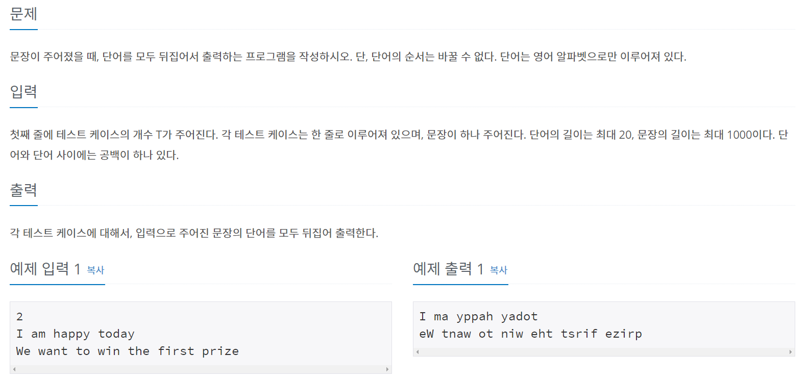
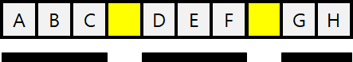
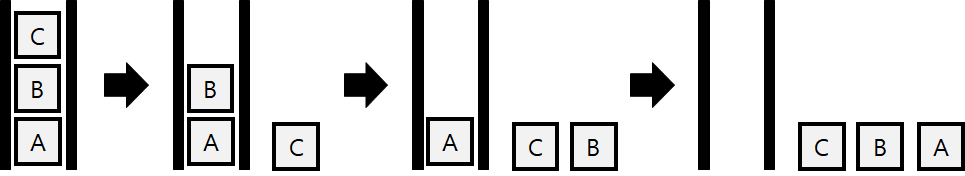
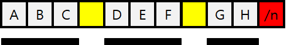
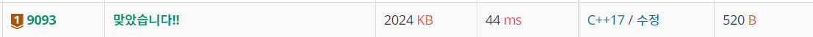

#INFO
난이도 : BRONZE1
알고리즘 유형 : STACK(스택)
∝문제 출처 : https://www.acmicpc.net/problem/9093

#SOLVE
스택 자료구조를 이용해 풀이 하였다. getline() 함수를 이용해서 모든 문자열을 받아들인 후 , 반복문을 돌려서 공백을 만나기 전까지 문자를 스택에 쌓고, 공백을 만나면 가장 위에 있는 단어부터 스택을 pop 한다. 이렇게 하면 각 단어들이 뒤집어 출력되게 된다.
 
하지만 이 방식에는 한 가지 문제점이 존재한다. 공백을 만날 때 스택을 하나 씩 꺼내게 되면 마지막 문자열(GH)는 출력을 못하게 된다. 따라서, 입력받은 문자열에 '/n' 문자를 추가해 준 뒤, 공백 또는 '/n'을 만날 때 스택을 하나 씩 꺼내게 해 주면 모든 문자를 뒤집어서 출력하게 구현이 가능하다.

#CODE
#include <iostream>
#include <stack>
#include <string>
using namespace std;
int main() {
ios_base::sync_with_stdio(false);
cin.tie(NULL);
cout.tie(NULL);
int testCase;
cin >> testCase;
cin.ignore(); // clear buffer
while(testCase--) {
string str;
getline(cin, str);
// 문자열 끝에 /n 추가
str += '\n';
stack<char> stk;
for (char ch : str) {
// 공백 OR \n 을 만났을 경우
if (ch == ' ' || ch == '\n') {
while (!stk.empty()) {
cout << stk.top();
stk.pop();
}
cout << ch;
}
else {
stk.push(ch);
}
}
}
return 0;
}